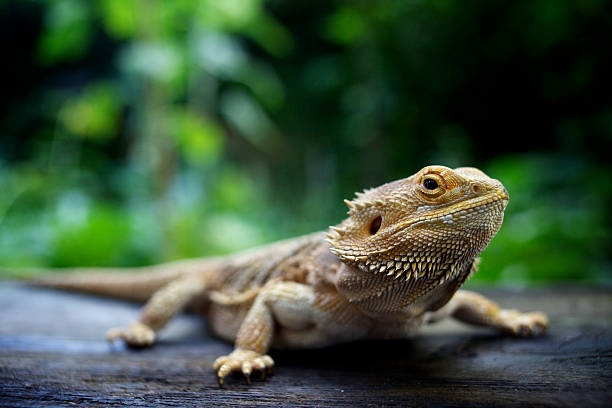
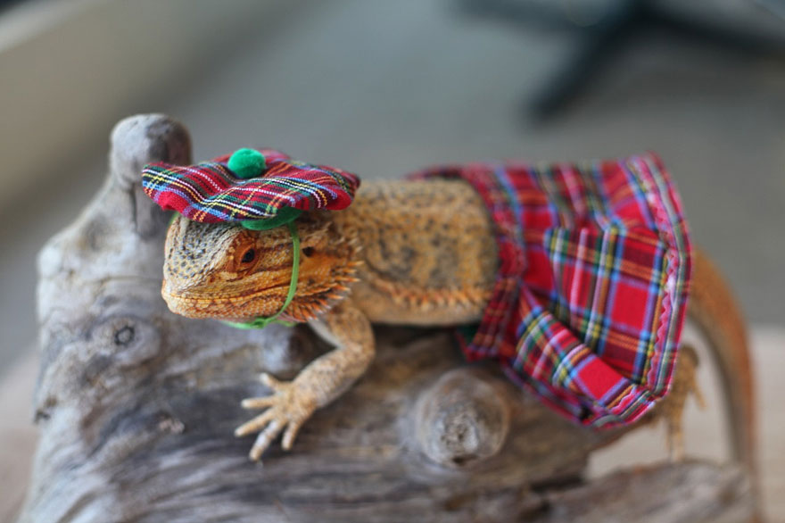

Fun Facts About Bearded Dragons
- Bearded dragons are native to Australia and are also known as "beardies" by their fans.
- They get their name from the spiky "beard" of skin under their throats that they puff out to appear larger.
- Bearded dragons are diurnal, which means they are most active during the day.
- They are omnivores and enjoy a varied diet of insects, vegetables, and fruits.
- Bearded dragons are known for their friendly and docile nature, making them popular pets.
- These reptiles can change their body color to regulate their temperature and communicate with other dragons.
- Bearded dragons have a unique defense mechanism – they can puff themselves up and open their mouths wide to intimidate predators.
- They have excellent eyesight and can even see in full color.
- Bearded dragons can live up to 10-15 years with proper care.
- They communicate through various behaviors, such as arm waving, head bobbing, and "bearding" (puffing out their throat).

